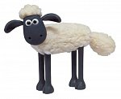
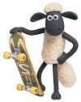

Shaun the Sheep je můj nejnovější objev v oblasti sledování počítačové obrazovky za účelem pasivní relaxace. Opět britského původu. Abych byl spravedlivý – objev není přímo můj, poprvé jsem ovečky viděl na displeji Aceru od spolubydlícího. Ovce jsou jedinečné v několika věcech…
- je to pohádka, naprosto dokonalá plastelínková (?) pohádka
- jsou neskutečně vtipné a zdá se, že jsou neohratelné
- mají naprosto ideální délku jednoho dílu (5 minut)
Co se skrývá pod vlnou
Příběhy ovečky Shauna jsou nespojité krátké příběhy z jedné farmy. Hlavními postavami jsou ovce, především pak ovečka Shaun, která je takový trochu všeuměl a hlavně zatímco se v kritických situacích ostatní ovce stahují, Shaun jde vpřed a zásadně se snaží o průzkum a jde těžce do rizika (na což často samozřejmě doplatí :D ). V dílech je prakticky vždy také farmář, který se nesmí nikdy dovědět, co jeho ovce dělají za nepatřičnosti, popřípadě že mu mizí z louky. Farmář má pejska, který tak trochu poskakuje mezi ním a ovcemi, chvíli peče více s jednou, chvíli s druhou stranou a bílé vlněné nezbedy především hlídá. Na farmě pak jde najít samozřejmě další zvířátka, jež dotvářejí atmosféru – moje nejoblíbenější jsou teda rozhodně naprosto dokonalá prasata :D . Ovečky mají také své speciální hrdiny stáda – brzy si zamilujete jehně nebo extrémně obrovskou a tlustou ovci, která sežere všechno co vidí a v mnoha dílech dobře poslouží jako závaží na kladce :)) .
No na seriálu obdivuji především zpracování a vtipnost, která se s díly nevytrácí a je taková… nenásilná, chytrá… Nejde o sprosťárny nebo násilí, za celých 5 minut nezazní jiný zvuk než beeeeeeeeeeeeeeeeee a přitom se člověk nasměje skoro více jak při prvních dílech IT crowd. Na odreagování je to prostě ideální…
Wallace & Gromit
Tvůrci Shauna jsou Aardman Animations, kteří mají za sebou především věci okolo Wallace & Gromita. Humor oveček je samozřejmě podobný. Dokonce mám dojem, že Shaun the Sheep je původně postava z W&G a všech 40 dílů ovčích příběhů je vlastně spin off. Každopádně, až si těch zmíněných 40 dílů seženete, rozhodně nepodlehněte chuti pouštět si díl za dílem – jsou krátké a půjde to rychle, ale velmi brzy vás to bude mrzet a budete litovat, že jste si nějaké díly nešetřili ;) . Já si ovečky schovávám už dlouho a dostaly o zkouškovém dost zabrat, ale pár dílů mi nakonec ještě zbývá… :)
 Kindle
Kindle